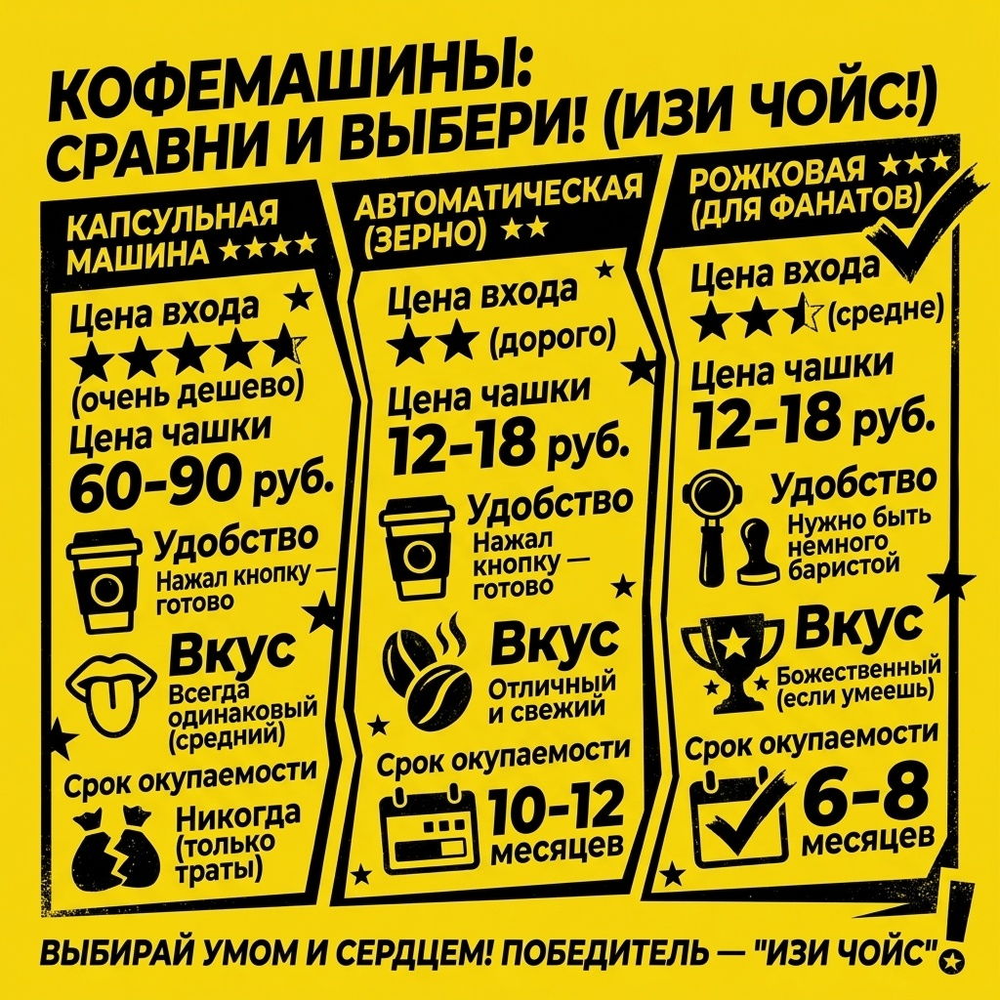

Кофейный калькулятор: Какую кофемашину выбрать, чтобы не прогадать?
Выбор кофемашины — это не просто покупка техники, это долгосрочная инвестиция в ваше утро. Многие попадают в ловушку «дешевой капсульной машинки», не считая стоимость чашки кофе на дистанции года.

Нюанс №1: Модуль и привязка к капсулам
Капсульные системы кажутся дешевыми на старте, но каждый раз вы переплачиваете за грамм кофе в 3-5 раз больше, чем при использовании обычного зерна.

ИЗИ-правило: Считайте стоимость чашки, а не ценник на витрине.
Нюанс №2: Магия зернового кофе
Автоматическая кофемашина с кофемолкой — это выбор для тех, кто пьет 2+ чашки в день. Окупаемость достигается за счет дешевизны сырья в пачках по 1 кг.

Стратегии выбора

Наш выбор — зерновая кофемашина Delonghi для стабильного результата. Если бюджет ограничен, стоит присмотреться к капельным моделям Philips или компактным решениям от Xiaomi.